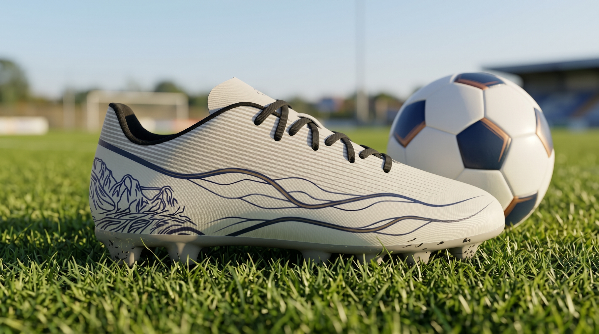
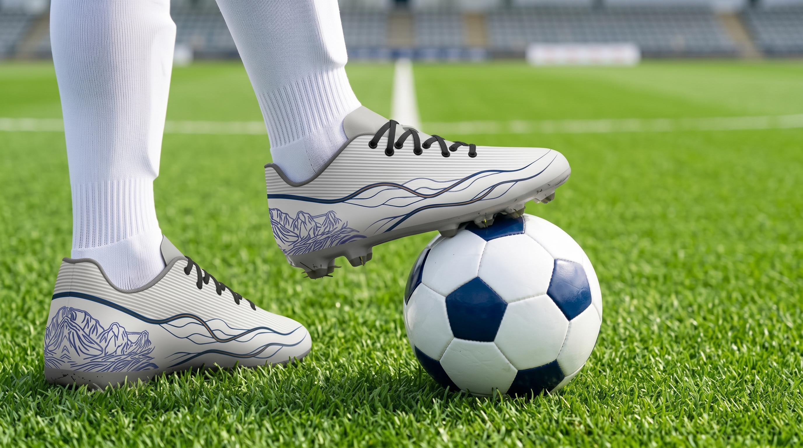
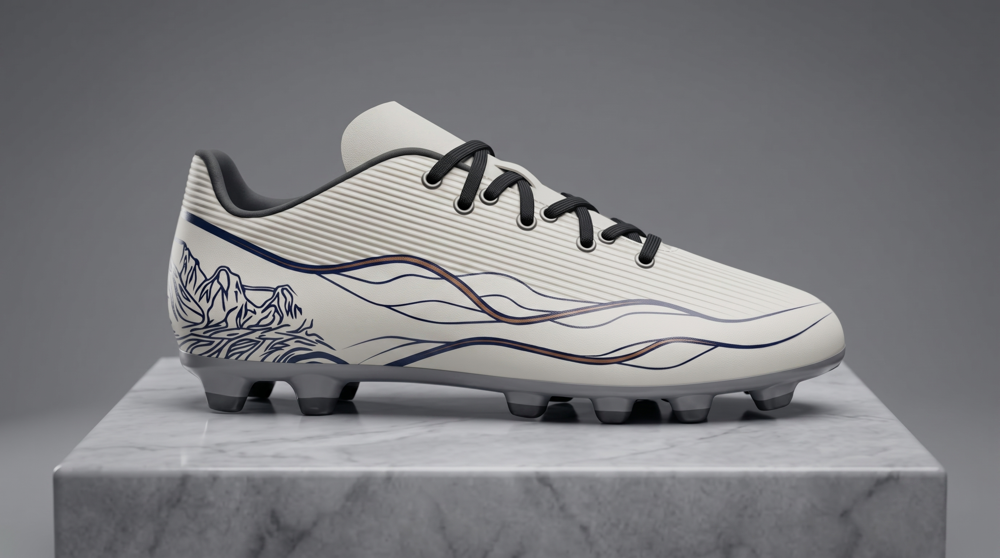
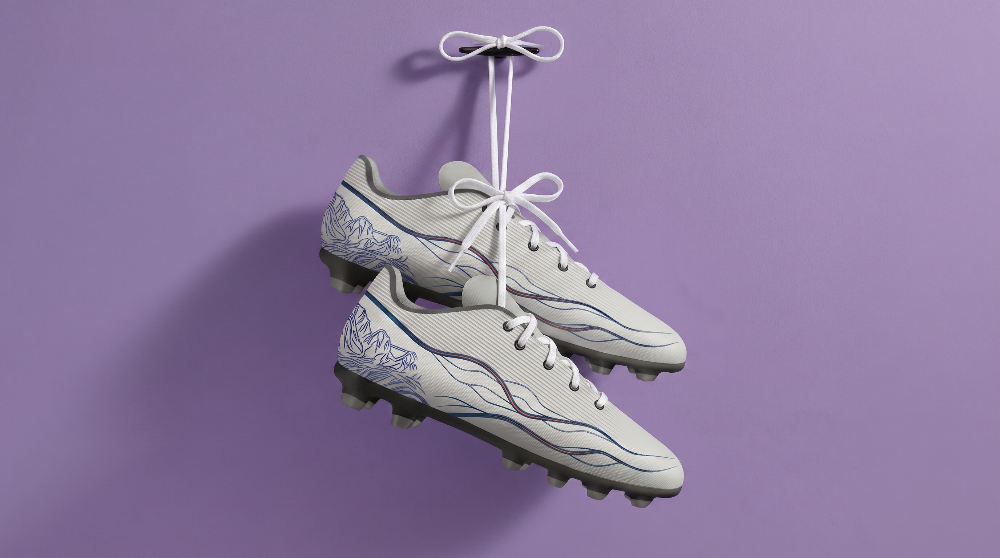

WAYAG
ARCHIPELAGO
Panduan lengkap identitas visual koleksi sepatu yang terinspirasi dari keajaiban geologis Kepulauan Wayag, Raja Ampat. Dari konsep filosofis hingga library elemen desain.
Dari Surga Terakhir, Untuk Setiap Langkah
Wayag bukan sekadar nama tempat. Ia adalah manifestasi kesabaran bumi — bebatuan kapur yang dulunya terumbu karang di dasar laut, terangkat oleh pergerakan lempeng tektonik, lalu diukir perlahan oleh air hujan dan ombak selama ratusan ribu tahun.
Hasilnya? Pemandangan yang tak ada duanya: gugusan pulau-pulau karst berbentuk kerucut yang menjulang dari laut biru tenang, menciptakan labirin alam yang memesona.
"Hutan adalah Ibu, Laut adalah Ayah, dan Pesisir adalah Anak."
— Pepatah Adat Raja Ampat
Perjalanan Geologis Wayag
Fase 1 · Jutaan Tahun Lalu
Terumbu karang tumbuh subur di dasar laut, membentuk lapisan batuan kapur yang tebal.
Fase 2 · Pergerakan Tektonik
Lempeng bumi bertabrakan, mengangkat dasar laut menjadi daratan yang menjulang.
Fase 3 · Pengukiran Alam
Air hujan dan ombak laut mengukir batuan kapur, menciptakan bentuk ikonik yang kita kenal hari ini.

Harmonisasi Alam & Performa Lapangan Hijau
75% Spesies Karang Dunia
Raja Ampat adalah rumah bagi keanekaragaman hayati laut tertinggi di planet bumi.
1.500+ Pulau
Gugusan kepulauan yang membentang luas, menciptakan mosaik alam yang tak terhingga.
UNESCO Global Geopark
Pengakuan dunia atas warisan geologis dan budaya yang luar biasa.
Bahasa Garis: Aliran Dinamis
Setiap garis pada desain ini adalah terjemahan visual dari arus samudra yang menghubungkan kepulauan Nusantara. Di bawah ini adalah elemen-elemen garis dalam bentuk murninya, sebelum diaplikasikan ke sepatu.

Flow Arc · Aliran Utama
Dua garis tebal yang mengalir dinamis dengan aksen biru muda di tengahnya. Melambangkan arus laut utama Nusantara — kekuatan yang tak terhentikan, arah yang jelas, energi yang terus bergerak maju.

Sub Flow Arc · Aliran Sekunder
Garis-garis tipis yang berkelok-kelok dan saling bersilangan. Mewakili arus sub-archipelago — aliran air yang lebih kecil yang mengelilingi setiap pulau, menciptakan teluk-teluk tersembunyi dan ekosistem unik.
Makna Dalam Tradisi Nusantara
Seperti motif Banyu Mili pada keris Jawa atau motif sungai pada batik Nusantara, garis aliran air secara turun-temurun melambangkan keluwesan, ketenangan, dan kekuatan yang adaptif. Air selalu menemukan jalan — begitupun seharusnya kita menghadapi kehidupan. Garis yang mengalir tanpa putus juga menjadi metafora aliran rezeki, kelangsungan hidup, dan energi yang tak pernah putus.
Pola Penggunaan
- + Flow Arc sebagai elemen dominan
- + Sub Flow sebagai pengisi dan pendukung
- + Selalu mengalir dari belakang ke depan
- + Hindari sudut yang terlalu tajam
Bahasa Kontur: Bebatuan Karst
Elemen ikonik yang menjadi identitas utama koleksi ini. Berikut adalah desain bebatuan karst dalam bentuk murninya — hasil ekstraksi artistik dari formasi geologis Wayag yang sebenarnya.

Karst Formation · Simetri Penuh
Ilustrasi lengkap formasi bebatuan karst Wayag dengan simetri sempurna. Puncak-puncak yang menjulang dan garis kontur yang detail merepresentasikan kompleksitas dan keindahan formasi geologis yang terbentuk selama jutaan tahun.

Karst Extended · Versi Sisi
Versi setengah dari formasi karst yang menampilkan detail lebih dekat pada satu sisi. Sangat cocok untuk aplikasi pada bagian lateral sepatu atau sebagai elemen dekoratif pada area yang membutuhkan komposisi asimetris.
Ketahanan
Seperti batuan karst yang tetap berdiri tegak meski dihantam ombak selama jutaan tahun — simbol ketangguhan yang tak tergoyahkan.
Transformasi
Dari terumbu karang di dasar laut menjadi puncak yang menjulang — perjalanan hidup yang penuh transformasi dan pertumbuhan.
Keunikan
Setiap pulau karst memiliki bentuk yang unik. Seperti setiap individu yang memakai sepatu ini — membawa keunikan masing-masing.
Palet Warna: Surga yang Terjaga
Setiap warna dipilih dengan penuh makna — mengekstrak esensi visual dari Wayag dan menerjemahkannya ke dalam palet yang tidak hanya indah, tetapi juga membawa pesan emosional.
Biru Bahari Dalam
#153953
PRIMARY ACCENT
Warna laut dalam Wayag yang tenang namun perkasa. Melambangkan kedalaman pemikiran, ketenangan batin, dan kekuatan yang terkendali.
Oranye Karang Hangat
#C4693D
SECONDARY ACCENT
Aksen hangat yang terinspirasi dari matahari terbenam di atas gugusan karst. Membawa energi, kehangatan, dan semangat petualangan.
Putih Murni
#FFFFFF
BASE / CANVAS
Warna dasar yang bersih, melambangkan kemurnian, kesederhanaan, dan ruang bernapas bagi elemen desain lainnya untuk menonjol.
Biru Karst Wayag
#455279
KARST ACCENT
Karakteristik bebatuan kapur karst di perairan Raja Ampat. Memberikan nuansa soliditas, ketangguhan, dan keanggunan garis seni.
Pola Kombinasi Warna
Kombinasi Utama
Biru Bahari 70% + Putih 30% untuk tampilan yang segar dan elegan.
Kombinasi Aksen
Biru Bahari + Oranye Karang untuk kontras yang hangat dan dinamis.
Kombinasi Karst
Karst Blue + Primary Accent untuk tampilan premium dan berkarakter.
Proses Transformasi: Dari Alam ke Produk
Perjalanan visual bagaimana keindahan alam Wayag diekstrak menjadi elemen desain murni, lalu akhirnya diaplikasikan dengan harmonis ke dalam bentuk sepatu.
A Transformasi Flow Arc
Tahap 1 · Inspirasi
Arus laut yang mengalir di antara pulau karst
Tahap 2 · Desain Murni

Ekstraksi menjadi garis desain yang bersih
Tahap 3 · Aplikasi

Diaplikasikan pada upper sepatu bagian lateral
B Transformasi Bebatuan Karst
Tahap 1 · Inspirasi
Formasi pulau karst yang menjulang dari laut
Tahap 2 · Desain Murni
Diterjemahkan menjadi seni garis kontur
Tahap 3 · Aplikasi

Menjadi identitas visual pada bagian heel cup
C Transformasi Line Texture
Tahap 1 · Inspirasi
Air hujan tropis yang turun membasahi karst
Tahap 2 · Desain Murni

Dijadikan tekstur garis Horizontal yang halus
Tahap 3 · Aplikasi

Menjadi tekstur upper yang memberikan kedalaman
Design Element Library
Koleksi lengkap elemen desain dalam bentuk murni. Setiap elemen dapat digunakan secara independen atau dikombinasikan sesuai panduan aplikasi di bawah ini.
Flow Arc
Primary Element
Garis aliran utama. Elemen dominan yang memberikan arah dan dinamika pada desain.
Sub Flow Arc
Secondary Element
Garis aliran sekunder. Elemen pendukung yang mengisi ruang dan menambah kedalaman.
Karst Symmetric
Signature Element
Formasi karst simetris penuh. Identitas utama yang menjadi ikon koleksi.
Karst Side Profile
Supporting Element
Versi sisi dari formasi karst. Cocok untuk komposisi asimetris dan area lateral.

Horizontal Line Texture
Texture Element
Tekstur garis Horizontal halus. Memberikan kedalaman visual dan nuansa pada area upper.

Complete Harmony
Combination Rule
Ketika semua elemen bersatu: Flow Arc sebagai tulang punggung, Karst sebagai identitas, dan Texture sebagai kedalaman.
Panduan Penggunaan Elemen
✓ Yang Dianjurkan
- ✓ Gunakan Flow Arc sebagai elemen utama yang mengalir dari belakang ke depan
- ✓ Tempatkan Karst Symmetric pada area heel untuk pondasi visual yang kuat
- ✓ Aplikasikan Line Texture pada area upper yang luas untuk menambah kedalaman
- ✓ Gunakan warna primary accent untuk Flow Arc dan Karst
✗ Yang Dihindari
- ✗ Jangan membalik arah Flow Arc (selalu dari tumit ke ujung)
- ✗ Hindari menumpuk terlalu banyak elemen dalam satu area kecil
- ✗ Jangan mengubah proporsi atau meregangkan elemen secara berlebihan
- ✗ Hindari penggunaan warna yang tidak ada dalam palet resmi
Nilai-Nilai yang Terkandung
Lebih dari sekadar sepatu, desain ini membawa nilai-nilai kearifan lokal Raja Ampat yang relevan untuk zaman modern.
Konservasi & Sasi
Sasi adalah tradisi adat tentang pengelolaan sumber daya yang bijaksana — tidak mengambil lebih dari yang dibutuhkan, memberi waktu alam memulihkan diri.
"Setiap langkah adalah pengingat untuk berjalan lembut di bumi."
Keberagaman dalam Kesatuan
Sebagai "Jantung Segitiga Karang Dunia", Raja Ampat adalah rumah bagi 75% spesies karang dunia. Keberagaman yang luar biasa hidup berdampingan dalam harmoni.
"Setiap pemakai unik, namun terhubung dalam satu semangat yang sama."
Transformasi & Pertumbuhan
Dari terumbu karang di dasar laut menjadi puncak yang menjulang — metafora sempurna untuk perjalanan manusia menuju versi terbaik dirinya.
"Setiap tekanan membentuk kekuatan. Seperti karst yang diukir waktu."
Keterhubungan
Garis-garis yang mengalir dan saling terhubung mencerminkan filosofi bahwa tidak ada yang berdiri sendiri. Setiap tindakan beriak memengaruhi yang lain.
"Kita adalah bagian dari sesuatu yang lebih besar. Mari buat riak yang positif."
Filosofi Inti
"Berjalan lembut di bumi,
berdiri kokoh seperti karst,
mengalir dinamis seperti samudra."
Galeri Produk Akhir
Menampilkan hasil akhir integrasi semua elemen desain pada produk sepatu dari tiga sudut pandang berbeda.
Tampak Depan
FRONT VIEWMenampilkan simetri garis aliran pada toe box dan tekstur garis vertikal pada upper yang tersusun rapi.
Tampak Samping
SIDE VIEWPemandangan terbaik dari aliran Flow Arc yang dinamis dari tumit menuju ujung, mengelilingi ilustrasi karst.
Tampak Belakang
BACK VIEWSimetri sempurna dari formasi bebatuan karst Wayag yang mendominasi heel cup sebagai identitas utama.
Lifestyle & Contextual



Ringkasan Komposisi Desain
Dinamis
Garis aliran yang bergerak memberikan kesan gerak dan energi, seolah selalu siap melangkah maju.
Berakar
Ilustrasi karst di tumit memberikan kestabilan visual, mengingatkan pada fondasi yang kuat.
Harmonis
Keseimbangan antara garis tegas dan lengkungan lembut, antara warna dingin dan hangat.
Rekomendasi Nama & Tagline
Pemilihan nama yang tepat akan memperkuat identitas koleksi ini dan membantu konsumen terhubung dengan cerita di balik desain.
WAYAG FLOW
Nama yang singkat, modern, dan mudah diingat. "Wayag" langsung merujuk pada sumber inspirasi, sementara "Flow" menangkap esensi dinamis dari garis-garis aliran.
"Mengalir bersama alam, melangkah penuh makna."
KARST ARCHIPELAGO
Nama yang kuat dan eksotis, langsung menggambarkan dua elemen kunci desain: bebatuan karst yang ikonik dan gugusan kepulauan Nusantara.
"Berdiri kokoh seperti karst, mengalir luas seperti archipelago."
SASI ONE
Nama yang penuh makna filosofis, mengusung nilai konservasi dan kearifan lokal Sasi. "One" menekankan kesatuan antara manusia dan alam.
"Satu langkah, satu harmoni dengan alam."
CORAL HEART
Merujuk pada posisi Raja Ampat sebagai "Jantung Segitiga Karang Dunia". Nama yang puitis dan emosional.
"Di setiap langkah, detak jantung alam menyertai."
Kalimat Kunci untuk Marketing & Presentasi
"Jutaan tahun dalam setiap langkah."
"Dari dasar laut menjadi puncak kejayaan."
"Alirkan energi archipelago dalam setiap langkahmu."
"Keindahan yang diukir oleh waktu, ketahanan yang ditempa oleh alam."